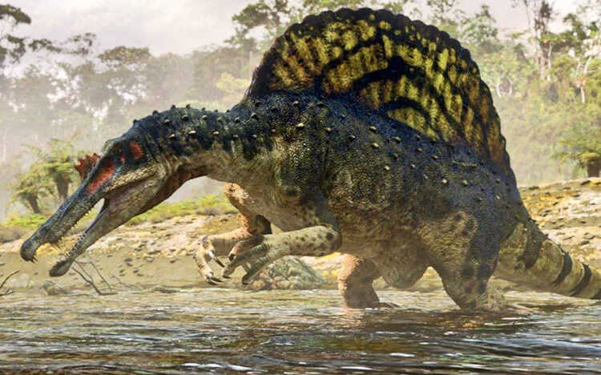

Спинозавр – це найбільший хижий динозавр, якого коли-небудь знайшли. Він має довгі колючки (вітрила) на спині.

Спинозавр (Spinosaurus, від лат. spina — «голка» + дав.-гр. σαύρος — «ящірка») - рід спінозаврових динозаврів, що був одним із найбільших наземних хижаків, які коли-небудь існували. Рештки знайдені в Алжирі, Єгипті, Марокко, Нігері, Тунісі, датуються сеноманським періодом пізньої крейди, приблизно від 100 до 94 мільйонів років тому. Рід вперше став відомим з єгипетських зразків, знайдених у 1912 році та описаних німецьким палеонтологом Ернстом Штромером у 1915 році. Три види спінозаврів були названі: Spinosaurus aegyptiacus (буквально, «єгипетський хребетний ящір» (англ. Egyptian spine lizard)), Spinosaurus mirabilis[7] (у перекладі «дивовижний хребетний ящер») і спірний вид Spinosaurus maroccanus (у перекладі «марокканський хребетний ящір» (англ. Moroccan spine lizard)). Рід спінозаврів Sigilmassasaurus, що існував паралельно, деякі автори також синонімізують з S. aegyptiacus, хоча інші дослідники вважають його окремим таксоном. Інший можливий молодший синонім — Oxalaia з формації Алкантара в Бразилії.